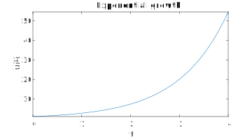
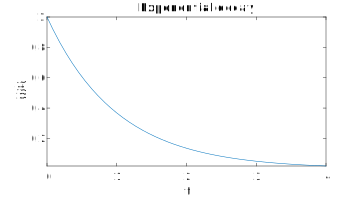
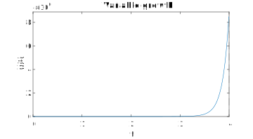
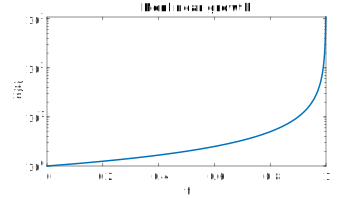

Section 1.1 Introduction
¶Refer to section 1.1 of the text.
A differential equation is an equation that has some derivatives in it. (Duh.) The variable whose derivative is taken is called the dependent variable and is considered the "unknown" of the differential equation. We'll be concerned with the case where there is only one independent variable (a "with respect to" variable in the denominator of a derivative), so there are no partial derivatives and we say the equation is an ordinary differential equation, or ODE. For discussions and theory we will stick to \(y\) and \(t\) as the dependent and independent variables, but in general these are determined by what is being modeled by the ODE.
If only first derivatives appear (that is, no \(y''\text{,}\) \(y'''\text{,}\) etc.), it's a first-order ODE. We're going to stick to this kind of ODE for a while.
An equation like \(\dd{y}{t}=f(t)\) is the simplest kind of ODE. You can just integrate both sides straightaway, getting \(y(t) = \int f(t)\,dt + C\text{.}\) Notice that arbitrary constant \(C\text{.}\) It comes up in all first-order ODEs; that is, we expect a family of solutions, not a single solution, unless more information is given to pin it down.
Things get interesting when both \(y\) and \(y'\) appear in the equation. The text uses four examples or archetypes to begin the discussion.
\begin{equation*}
\dd{y}{t} = y
\end{equation*}
It's trivial to check that \(y=e^t\) is a solution of \(y'=y\text{,}\) in the sense that it makes the ODE a true equation. (However, it isn't the only solution.) As a mathematical model, the ODE states that the rate of change in \(y\) is equal to \(y\) itself, and the result is exponential growth: the solution grows larger, which increases the rate of growth, and so on.
y = @(t) exp(t);
fplot(y,[0,4])
xlabel('t'), ylabel('y(t)')
title('Exponential growth')

Example 1.1.2 Constant decay rate
\begin{equation*}
\dd{y}{t} = -y
\end{equation*}
Now the model states that the rate of change is negative when \(y\) is positive. So a positive starting value will decrease, but the rate of decrease will then lessen, etc. From this qualitative description it's impossible to tell whether the solution ever reaches zero (at which point its rate of change would be zero.)
But we can end the suspense by easily verifying that \(y=e^{-t}\) is a solution. This function asymptotically approaches zero as \(t\to\infty\text{,}\) which we call exponential decay. In other, related problems we will find that solutions can decay (or "relax") to any value, not just zero.
y = @(t) exp(-t);
fplot(y,[0,4])
xlabel('t'), ylabel('y(t)')
title('Exponential decay')

Example 1.1.3 Variable growth rate
\begin{equation*}
\dd{y}{t} = 2ty
\end{equation*}
In this case we are back to a positive growth rate for positive solution values. In fact, the growth rate increases with time as wwell as with the solution itself. You can check that \(y=e^{t^2}\) is a solution, and indeed this grows at a "super-exponential" rate.
y = @(t) exp(t.^2);
fplot(y,[0,4])
xlabel('t'), ylabel('y(t)')
title('Variable growth')

Example 1.1.4 Nonlinear growth
\begin{equation*}
\dd{y}{t} = y^2
\end{equation*}
This is our first example featuring a nonlinear expression in the variable \(y\text{.}\) As a rule, nonlinear ODEs are much harder to solve and have less predictable mathematical structure than linear problems. This particular problem isn't so tough, though; you can check that \(y=1/(1-t)\) is a solution. Note that the growth is even faster--literally off the charts as \(t\to 1\text{.}\)
(You might wonder about the validity of any mathematical model that leads to an infinite result in finite time. But in fact this ODE describes the evolution of the slope of the line of sight to an airplane flying straight over you, and when the airplane is directly overhead, the slope is infinite. So while the model becomes mathematically invalid at that moment, it does describe a concrete physical situation.)
y = @(t) 1./(1-t);
fplot(y,[0,1])
xlabel('t'), ylabel('y(t)')
title('Nonlinear growth')
